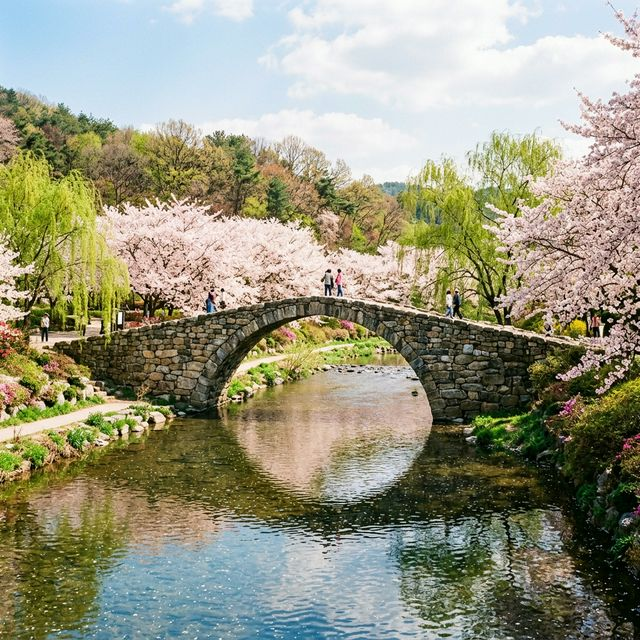
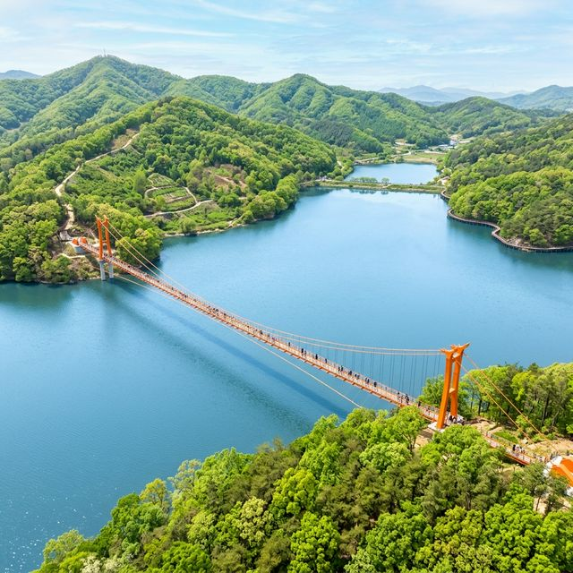
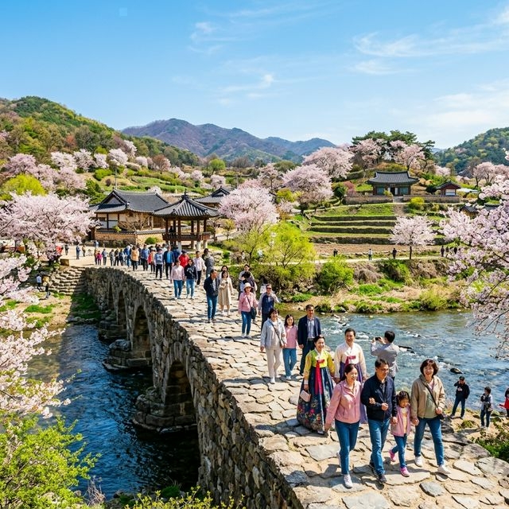

올해로 제26회를 맞이하는 생거진천농다리축제는 2026년 4월 14일 현재, 만개한 봄꽃들과 함께 절정을 향해 달려가고 있습니다. 축제의 공식 기간은 4월 초부터 말까지
넉넉하게 이어지며, 메인 행사는 이번 주말을 기점으로 집중되어 있습니다. 진천군 문백면 구곡리 일대에서 펼쳐지는 이번 행사는 '천년의 숨결, 농다리에서 만나다'라는 슬로건
아래 역사와 자연이 어우러진 다양한 체험 프로그램을 선보입니다.
특히 2026년에는 야간 경관 조명이 대폭 강화되어 밤에도 화려하게 빛나는 농다리의 모습을 감상할 수 있게 되었습니다. 낮에는 청량한 초평호의 물결을 즐기고, 밤에는 은은한 조명 아래 돌다리를 건너는
낭만적인 경험은 진천 여행에서만 느낄 수 있는 색다른 묘미입니다. 방문 전 공식 홈페이지를 통해 당일 기상 상황과 특설 무대 공연 시간을 미리 체크하시는 것을 강력하게 추천드립니다.

진천 농다리는 고려 초기에 축조된 것으로 전해지며, 약 1,000년의 역사를 자랑하는 동양 최고(最古)의 돌다리입니다. 이 다리의 놀라운 점은 시멘트나 다른 결합제 없이
오직 거친 돌을 맞물려 쌓아 올렸음에도 불구하고, 수많은 홍수를 견뎌내며 오늘날까지 그 원형을 유지하고 있다는 사실입니다. 과학자들은 농다리의 배 부분처럼 유선형으로 설계된 교각 구조가 물의 저항을
최소화하는 결정적 역할을 한다고 입을 모읍니다.
축제 기간 중에는 농다리 건너기 체험뿐만 아니라, 향토 사학자가 들려주는 스토리텔링 투어도 진행됩니다. 지네를 닮은 다리의 형상에 얽힌 전설이나, 임진왜란 당시의 일화
등을 들으며 다리를 건너다 보면 단순한 돌덩이가 아닌 역사의 한 페이지를 밟고 있다는 경외심마저 듭니다. 아이들에게는 살아있는 역사 교육의 장이 되고, 어른들에게는 조상들의 뛰어난 토목 기술을 직접
확인하는 뜻깊은 시간이 될 것입니다.
올해 축제에서 가장 눈에 띄는 변화는 미디어 파사드를 활용한 야간 공연입니다. 농다리 주변의 암벽을 스크린 삼아 진천의 탄생 설화와 농다리의 건립 과정을 화려한 영상으로
재구성하여 관람객들의 찬사를 받고 있습니다. 매일 저녁 7시 30분부터 시작되는 이 공연은 초평호의 물 안개와 어우러져 몽환적인 분위기를 연출하며, 축제의 밤을 더욱 뜨겁게 달구고
있습니다.
또한, 초평호 수상 무대에서는 진천의 무형문화재 공연과 현대적인 밴드 연주가 교차하며 전 세대를 아우르는 즐거움을 선사합니다. 특히 올해는 지역 주민들이 직접 모델로
참여하는 '농다리 한복 패션쇼'가 열려 큰 호응을 얻고 있습니다. 강바람을 맞으며 즐기는 야외 공연은 도심의 스트레스를 한 번에 날려버릴 만큼 상쾌한 기분이 들게 하니, 조금 쌀쌀할 수 있는 저녁
기온에 대비해 가벼운 겉옷을 준비해 오시길 바랍니다.

농다리를 건너 왼쪽 산길을 따라 조금만 올라가면, 2026년 진천 여행의 새로운 랜드마크로 급부상한 '미르 309' 출렁다리를 만날 수 있습니다. 이름에서 알 수 있듯이
총길이 309m로 설계된 이 다리는 주탑이 없는 무주탑 방식으로 건설되어 보행 시 느껴지는 진동이 더욱 스릴 넘치게 다가옵니다. 다리 중앙부로 갈수록 초평호 밑바닥이 훤히 내려다보이는 격자형 바닥판이
설치되어 있어 짜릿한 쾌감을 선사하죠.
다리 위에서 바라보는 초평호의 전경은 그야말로 압권입니다. 호수를 둘러싼 용의 형상을 닮은 미르숲길과 푸른 산세가 파노라마처럼 펼쳐지는데, 이 광경을 사진으로 담기 위해
수많은 여행자가 이곳을 찾습니다. 높은 곳을 무서워하시는 분들도 튼튼한 난간과 안전한 설계를 믿고 천천히 걸어보신다면, 호수 위를 걷는 듯한 특별한 기분을 만끽하실 수 있을 것입니다.
출렁다리를 건너면 본격적으로 시작되는 초평호 미르숲길은 남녀노소 누구나 걷기 좋은 완만한 나무 데크길로 조성되어 있습니다. 소나무 숲에서 뿜어져 나오는 신선한 피톤치드를
마시며 걷다 보면, 일상의 피로는 어느덧 사라지고 마음의 평온이 찾아옵니다. 특히 4월의 숲길은 벚꽃과 진달래, 그리고 이제 막 돋아나기 시작한 연둣빛 새순들이 어우러져 눈이 정화되는 느낌을
줍니다.
전체 코스는 약 1시간에서 1시간 30분 정도 소요되며, 중간중간 호수를 조망할 수 있는 전망 쉼터와 포토존이 잘 마련되어 있습니다. '초평호 전망대'에 오르면 굽이굽이
흐르는 강줄기가 한눈에 들어오는데, 이곳이 바로 인스타그램에서 유명한 '한반도 지형' 조망 포인트입니다. 축제 기간에는 숲길 곳곳에서 작은 버스킹 공연도 열려, 음악 소리와 새소리가 어우러지는 완벽한
힐링 산책을 즐길 수 있습니다.

금강산도 식후경이라 불리듯, 진천 농다리 축제 현장에는 입맛을 돋우는 먹거리가 가득합니다. 진천의 대표 로컬 푸드인 생거진천 쌀로 만든 비빔밥과 인근 초평호에서 갓 잡아
올린 물고기로 끓여낸 '생선국수'는 반드시 맛봐야 할 추천 메뉴입니다. 특히 생선국수는 추어탕처럼 뼈째 갈아 넣어 국물이 진하고 칼칼해, 캠핑족이나 등산객들에게 최고의 보양식으로 인기가
높습니다.
축제장 내 먹거리 장터에서는 지역 부녀회원들이 직접 만든 도토리묵과 파전, 그리고 시원한 막걸리 한 잔의 여유를 즐길 수 있습니다. 2026년에는 '제로 웨이스트' 축제를
지향하여 모든 음식이 다회용기에 제공되는데, 환경을 생각하는 마음까지 더해져 음식 맛이 더욱 좋게 느껴집니다. 또한, 진천 특산물인 파프리카와 오이를 활용한 건강 간식들도 저렴한 가격에 판매되고 있으니
가족들을 위한 선물로 구매해 보시는 것도 좋겠습니다.
축제 기간 중에는 많은 관람객이 몰리므로 주차 전략이 매우 중요합니다. 농다리 입구 메인 주차장은 오전 일찍 만차되는 경우가 많으니, 조금 거리가 있더라도 진천군청이나
인근 임시 주차장을 이용하고 셔틀버스를 타는 것이 훨씬 빠릅니다. 2026년에는 도입된 스마트 주차 안내 시스템을 통해 스마트폰으로 실시간 주차 잔여 공간을 확인할 수 있어 한결
편리해졌습니다.
대중교통을 이용하시는 분들은 진천 터미널에서 축제 전용 순환 버스를 탑승하시면 약 15분 만에 행사장 도착이 가능합니다. 또한, 자전거를 이용하는 여행객들을 위해 자전거 보관소와 수리
센터도 운영 중이니 라이딩 코스로 진천을 선택하셔도 탁월한 결정이 될 것입니다. 주말보다는 평일 오전 방문이 한적하고 깊이 있는 관람에 유리하다는 점도 잊지 마세요!
가족 단위 방문객을 위해 어린이 전용 체험 구역이 별도로 운영되고 있습니다. 농다리의 원리를 직접 배워보는 '미니 농다리 쌓기', 진천의 캐릭터인 '생거'와 '진천'이를
활용한 페이스 페인팅, 그리고 전통 민속놀이 체험까지 다채로운 활동이 아이들을 기다리고 있습니다. 특히 '돌다리 안전 교육'은 놀이처럼 진행되어 아이들이 다리에 얽힌 역사와 안전의 중요성을 동시에 배울
수 있는 좋은 기회입니다.
또한, 2026년에 새롭게 문을 연 '숲속 도서관'은 아이들에게 인기 만점입니다. 산책로 입구에 마련된 이 야외 도서관에서는 자연을 배경으로 책을 읽으며 정서적 안정을
찾을 수 있습니다. 유모차 대여 서비스와 수유실 등 편의시설도 깨끗하게 관리되고 있어, 영유아를 동반한 부모님들도 큰 불편함 없이 축제를 만끽하실 수 있도록 배려한 흔적이 돋보입니다.
농다리 축제 관람을 마쳤다면, 가까운 진천 종박물관과 백곡호 일대를 둘러보시는 코스를 추천합니다. 국내 유일의 종 전문 박물관인 이곳에서는 세계 각국의 아름다운 종과 우리
민족의 우수한 주조 기술을 감상할 수 있습니다. 특히 정시에 울리는 거대한 범종 소리는 가슴 깊은 곳까지 울리는 깊은 여운을 선사합니다.
시간적 여유가 있다면 한국 스포츠의 심장이라 불리는 진천 국가대표 선수촌의 견학 프로그램(사전 예약 필수)에 참여해 보는 것도 특별한 경험입니다. 우리나라를 대표하는
선수들의 훈련 모습을 가까이서 보며 열정을 느낄 수 있어, 꿈을 키우는 청소년들에게 큰 동기부여가 될 것입니다. 이처럼 진천은 역사와 자연, 그리고 현대적인 활력이 공존하는 매력적인 도시입니다.
2026년 4월의 진천은 그 어느 때보다 따스하고 활기찬 기운으로 가득합니다. 천 년 전 선조들이 쌓아 올린 견고한 돌다리 위에서, 우리도 과거와 현재를 잇는 새로운 추억의
조각을 쌓아보는 것은 어떨까요? 초평호의 잔잔한 물결과 미르 309 출렁다리의 짜릿함, 그리고 숲길이 전하는 연둣빛 위로는 지친 일상에 다시 일어설 수 있는 큰 힘을 실어줄
것입니다.
사랑하는 사람의 손을 잡고 농다리를 건너면 그 인연이 더욱 깊어진다는 이야기가 있습니다. 이번 주말, 망설이지 말고 진천으로 떠나보세요. 농다리의 징검다리 하나하나가 여러분의 발걸음을 기억하며, 가장
아름다운 봄의 기억을 선물해 줄 것입니다. 다음 포스팅에서도 여러분의 여행을 더욱 풍성하게 해줄 알찬 정보로 돌아오겠습니다!